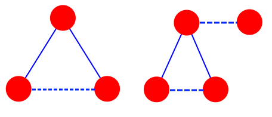
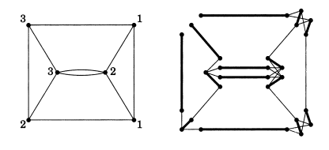

Matchings in General Graphs¶
In previous chapters, we examined the necessary and sufficient conditions for the existence of a perfect matching in bipartite graphs. In this section, we will investigate the existence of perfect matchings in arbitrary graphs.
1def add(a, b):
2 # در اینجا دو عدد a و b را با هم جمع می کنیم
3 return a + b
4
5
6def subtract(a, b):
7 return a - b # این تابع a را از b کم می کند
{kind=link}

Tutte's Theorem¶
For any subset \(S\) of vertices (which can be empty), let \(O(S)\) be the number of connected components of odd size after removing the vertices in \(S\) from the graph.
Tutte's theorem states that the following condition is necessary and sufficient:
\(\forall_S : |S| \geq O(S)\)
Tutte's condition is clearly necessary for the existence of a perfect matching. To prove necessity, assume for some set \(S\) we have \(|S| < O(S)\). In this case, for a perfect matching to exist, each odd component counted in \(O(S)\) must have a vertex matched to a vertex in \(S\). Since \(|S| < O(S)\), finding a perfect matching becomes impossible.
To prove sufficiency, we use an extremal argument. By contradiction, assume graph \(G\) has no perfect matching but satisfies Tutte's condition. Note that adding edges to \(G\) preserves Tutte's condition (why?). The main idea is to iteratively add missing edges to \(G\) until a perfect matching emerges. Eventually, we obtain a maximal graph \(H\) such that:
Tutte's condition holds in \(H\).
\(H\) has no perfect matching.
Adding any missing edge \(uv\) to \(H\) results in a perfect matching.
Our goal is to show that \(H\) already contains a perfect matching (leading to a contradiction).
First, observe that Tutte's condition for \(S = \phi\) implies \(H\) has no odd-sized connected components, so the total number of vertices is even.
Pear: Vertices \(a, b, c, d\) such that \(ab\) and \(ac\) are edges, but \(bc\) and \(ad\) are not edges.
Apple: Vertices \(a, b, c\) such that \(ab\) and \(ac\) are edges, but \(bc\) is not an edge.
We claim that if a "pear" exists in \(H\), we can prove \(H\) contains a perfect matching. Consider an arbitrary pear with vertices \(a, b, c, d\) as defined.
If we add edge \(ad\) to \(H\), a perfect matching \(M1\) containing \(ad\) must exist.
If we add edge \(bc\) to \(H\), a perfect matching \(M2\) containing \(bc\) must exist.
Now consider \(M = M1 \Delta M2\) (symmetric difference). As discussed earlier, the edges of \(M\) form a collection of cycles.
If edges \(ad\) and \(bc\) lie in distinct cycles¶
Then, from the cycle containing \(ad\), select edges from \(M2\), and from the cycle containing \(bc\), select edges from \(M1\) (choose edges from \(M1\) or \(M2\) arbitrarily for other cycles, and keep edges in \(M1 \cap M2\)). This results in a perfect matching in \(H\)!
If Edges \(ad\) and \(bc\) Are in a Cycle¶
First, we must state that this cycle is even. Now since \(b,c\) is one of the cycle's edges, \(b,c\) are two consecutive vertices in the cycle. Therefore, if exactly one of the edges \(ab\) or \(ac\) satisfies the following condition:
If we remove the endpoints of the edge from the graph, our cycle will split into two even-length paths.
Without loss of generality, assume this edge is \(ab\). Now select edge \(ab\) for the matching. Then remove \(a,b\) from the graph and alternately choose edges from the two resulting even-length paths for the matching. In this case, all vertices of our cycle will be covered by the selected edges. Similar to before, arbitrarily choose edges from \(M1\) or \(M2\) for the remaining cycles, and also select edges in \(M1 \cap M2\). This way, we will have a perfect matching in \(H\)!
If We Don't Have a Pear?¶
In the previous two sections, we proved that if graph \(H\) contains a pear, then \(H\) has a perfect matching. Now we must also consider cases where \(H\) does not contain a pear.
Let set \(C\) consist of all vertices in \(H\) that have edges to all other vertices (their degree is \(n-1\)).
If \(C\) contains all vertices of \(H\), this means \(H\) is a clique (and has an even number of vertices). Thus, it clearly has a perfect matching.
Now consider the graph \(W = H - C\). In \(W\), for every vertex \(u\), there exists a vertex \(v\) such that there is no edge between \(uv\) (why?). Therefore, if we can find an apple in \(W\), we can also find a pear (since it suffices to find a vertex \(d\) for vertex \(a\) in the apple such that there is no edge between \(a\) and \(d\)).
Thus, if an apple exists in \(W\), the problem is solved. Hence, assume there is no apple in \(W\). In this case, for any arbitrary vertices \(a, b, c\) where \(ab\) and \(ac\) are edges of the graph, \(bc\) must also be an edge of this graph. Consider an arbitrary vertex \(u\) and let set \(A\) consist of \(u\) and all its adjacent vertices. Between any two vertices in \(A\), there must be an edge (why?). Also, no vertex outside \(A\) has an edge to \(A\) (why?). Therefore, we can conclude that every connected component in \(W\) is a clique.
Arbitrarily match the vertices within each clique. Exactly one vertex will remain unmatched in each odd-sized clique. Since Tutte's condition is satisfied for \(S = C\), all remaining unmatched vertices in \(W\) can be matched to vertices in \(C\). Finally, we arbitrarily match all remaining vertices in \(C\) (which form a clique with an even number of vertices). Thus, we have found a perfect matching in \(H\).
The More Generalized Case of Matching or k-factor¶
By definition, a perfect matching in graph \(G\) refers to a subset of the graph's edges, denoted \(M\), where in \(M\) the degree of every vertex is exactly 1.
Now we want to generalize this definition. Suppose \(a_1,a_2,\ldots,a_n\) are given, and we need to determine whether there exists a subset of the graph's edges \(M\) such that the degree of each vertex \(u\) in \(M\) equals \(a_u\)?
At first glance, this problem appears far more general and harder than matching. However, in this section, we aim to solve it using matching itself.
A Flawed Idea¶
Probably the first idea that comes to mind is to copy vertex \(u\) exactly \(a_u\) times, then for each edge \(uv\) in \(G\), create edges between all copies of \(u\) and \(v\). Then check whether the new graph contains a perfect matching.
This idea is very similar to what we previously examined in the chapter on bipartite matching, but it has a subtle flaw. The issue is that we might simultaneously use multiple edges between \(u\) and \(v\) in the matching, effectively reusing a single edge multiple times - which violates the problem's constraints.
Correct Solution¶
Let \(d_u\) be the degree of vertex \(u\). We construct graph \(G^{\prime}\) from graph \(G\) as follows:
For each vertex \(u\), we place a complete bipartite graph such that the first part contains \(d_u - a_u\) vertices and the second part contains \(d_u\) vertices. We call the bipartite graph corresponding to vertex \(u\) \(B_u\). Then, consider the edges of graph \(G\) in an arbitrary order and add their corresponding edges (as we will describe) to graph \(G^{\prime}\).
Suppose the \(i\)-th edge we examine is \(uv\), and prior to this, we have examined \(c1\) edges adjacent to \(u\) and \(c2\) edges adjacent to \(v\). Now, the corresponding edge of \(uv\) will be the edge between the following two vertices:
The \(c1\)-th vertex of the second part of graph \(B_u\)
The \(c2\)-th vertex of the second part of graph \(B_v\)
We claim that the existence of a subset \(M\) of edges satisfying the problem's condition is equivalent to the existence of a perfect matching in graph \(G^{\prime}\)!
Note that in this graph, each edge in the original graph corresponds to exactly one edge, thus avoiding the previous issue (using an edge multiple times). The complete proof of the correctness of the above theorem is left to the reader.
{kind=link}

This book is made by The Shaazzz contributors.
It is publicly available with cc-by-sa license.
Last updated at آوریل 19, 2025.
Rendered by Sphinx (4.3.2) and Minoo theme (Beta 0.9.7).